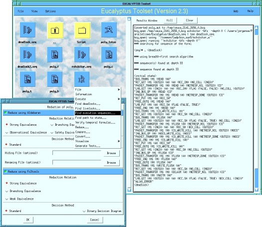
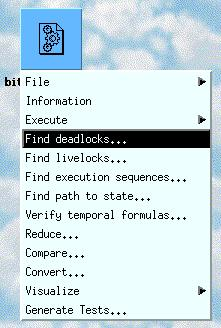

Unless specified otherwise, only the left button of the mouse is active in the EUCALYPTUS graphical user interface.

The xeuca window is divided vertically into two sub-windows:
Clicking on a directory icon makes the current directory to change and to enter this directory. Following the usual convention, the parent directory is named "..".
Clicking on a file icon displays a menu that proposes all operations available for this file. This menu is "contextual" in the sense that the list of operations proposed in the menu depends upon the type of file. Selecting an operation in the menu launches the corresponding EUCALYPTUS tool(s). To click on a file icon, any mouse button can be used and all buttons have the same effect.

All versions of xeuca higher than 2.0 are distributed within CADP. These new versions are not compatible with the previous versions 0.* and 1.*, which were distributed apart from CADP. To upgrade from these old versions, please follow the instructions given in the $CADP/HISTORY file, under reference number #404; the tst command also provides assistance for the upgrade.
The following recommendations ensure a proper installation:
It is possible to customize (in a limited way) the xeuca graphical user-interface. The settings specific to each user are stored in a startup file $HOME/.config/cadp/xeucarc. The default version of this file is available in $CADP/src/eucalyptus/xeucarc_standard. The startup file format is undocumented, but easy to understand (and possibly modified manually). Warning: the format of this file may evolve in the future.
Version 1.0 of EUCALYPTUS was developed in the Euro-Canadian project EUCALYPTUS using the Xtpanel graphical user-interface generator.
Version 2.0 of EUCALYPTUS was first developed by Jean-Michel Frume and Hubert Garavel. It was later improved by Mark Jorgensen and Hubert Garavel (versions 2.1, 2.2 and 2.3). It was ported to Windows by Aldo Mazzilli (version 2.4).
Acknowledgements are due to Jean-Charles Henrion (University of Liege), Mihaela Sighireanu (INRIA) and Bruno Vivien (INRIA) for their detailed bug reports and suggestions regarding the early versions 2.0 of the graphical user-interface.
Former versions of EUCALYPTUS used to support other tools such as APERO (Université de Liège, Belgium), ELUDO (University of Ottawa, Ontario, Canada), FC2Tools (INRIA, Sophia-Antipolis), TESTGEN (Institut National des Telecommunications, Evry, France), TETRA (University of Montreal, Quebec, Canada), and VISCOPE (IRISA, Rennes, France). These tools had to be removed from EUCALYPTUS either because they are no longer maintained by their respective authors or because they are not available for recent computers architectures/operating systems.
The Belgian Web page on EUCALYPTUS is located at http://www-run.montefiore.ulg.ac.be/Projects/Presentation/index.php?project=Eucalyptus
The Canadian Web page on EUCALYPTUS is located at http://lotos.site.uottawa.ca/eucalyptus/